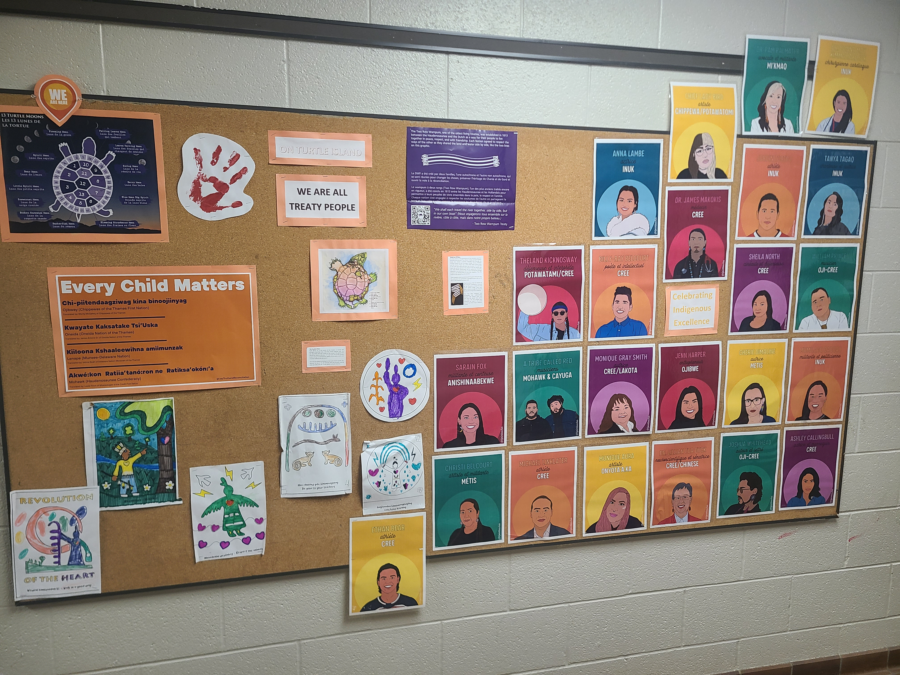

I would choose to create this display because I believe it is important for students to understand and appreciate the Indigenous peoples and histories connected to the land on which we live and learn. It would provide an accessible way to incorporate Indigenous perspectives into the school environment.
① the thingFormative Practicum Assessment
A hallway display highlighting local Indigenous peoples, cultures, histories, and contributions. The display would encourage students and staff to recognize and appreciate the Indigenous peoples connected to the land on which we live and learn.

🌱 Indigenous Literature
Indigenous voices are extremely important, and sharing stories written by Indigenous authors helps promote greater understanding while contributing to the ongoing work of decolonization.
① the thing Indigenous Picture Books
Two different books I have used to incorporate Indigenous perspectives in the classroom, each offering a unique purpose and perspective.